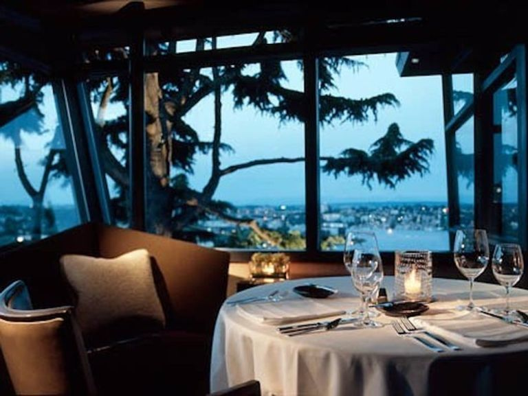
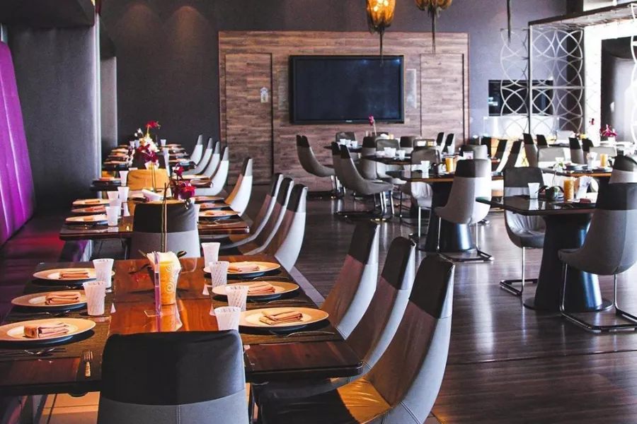
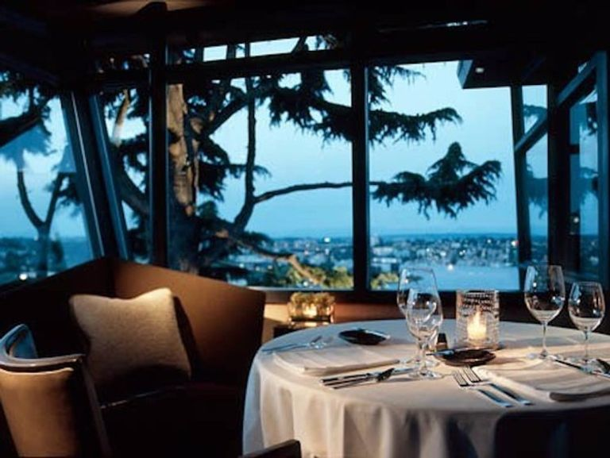
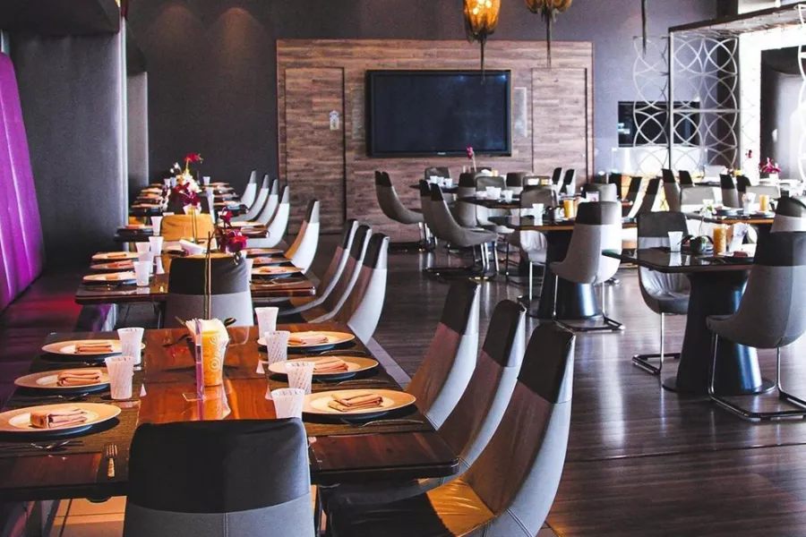

(BAYAN RESTAURANT)
Bayan Restaurant is one of the largest and most famous restaurants in Palestine. It is located northwest of Jerusalem in the town of Beit Surik on Royce Street. The restaurant offers several quick meals, including pizza, shawarma, and crispy chicken, in addition to cold and hot drinks.
 


